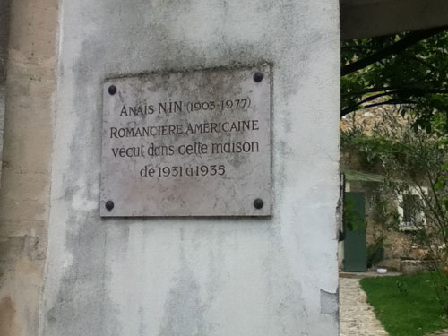
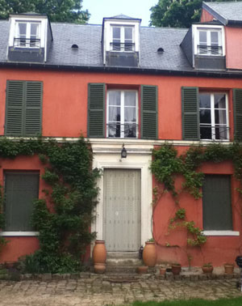

Me and Anaïs Nin in Louveciennes

The plaque.
Though it’s been a couple weeks since I returned from Paris, the experience is still fresh in my mind and has been waiting to be written about. Well, Paris hasn’t exactly been waiting (I wrote about it here), but Louveciennes has. On a sleepy Sunday afternoon I caught the train from Gare St. Lazare with some friends to go visit the town that Anaïs Nin lived in during her Parisian years. Not even an hour out of the city and the forest was encapsulating. And as I rode I easily remembered the journeys already taken to the town and house described so frequently by Henry Miller and Anaïs Nin in their letters and her journals.
Off the train and the quietude made it impossible to believe that people lived there. Only some shouts of boys playing ball, but no cars, and instead lilacs climbing the old walls to send off their perfume. Rue Montbuisson curved upwards with intermittent houses like elaborate cottages on either side and on one side, a retirement home. Then there was the gate that looked familiar from the pictures, and it was open. A family, daughters and dad, were unpacking their car probably returning from a long holiday weekend. We stood there for a bit, gawking, until we asked if we could go into the courtyard.
The man said of course in perfect English and asked if we knew the writer whose plaque hung outside the gate. Of course. He was smug in the same way that I was probably smug about not needing to answer since it was obvious that I didn’t come all that way to look at a house because it was a house. Instead, the house and its small garden are more than a house; they make a landscape that has lived in my imagination for a long time. When Henry Miller writes, “I would like to call Louveciennes and say come to Paris. . .” and Nin writes back, “Louveciennes, as a symbol of much else, belongs to the one who takes it, penetrates it, understands it.”

The house.
I wondered if the man lives in the house because Anaïs Nin once lived there, or if he lives there because it’s a house (a question I think also deserves a smug, obvious answer). But I didn’t want to ask too many questions as I stood there in his yard looking at his house and his little front door that also belongs to everyone who has ever indulged on the romance between the writers. I thrill at the memory of standing there, as if somehow and for a moment I was able to sit ring-side to their relationship, picturing their lives with the intensity that they lived them.
We thanked the man again before going, and he shut the gate. Outside I realized that we had been lucky: if we hadn’t caught the family we would have had to take satisfaction in an olive-green gate.
The town continued to sleep off its Sunday lunch as we wandered through. There was a bakery open, so we ate a croissant. There was a alimentari open, so we bought some warm beer to drink in the shadow of the church. The wind blew the sun out from the thick clouds in spurts. On our way back to the city I watched the Sacre Coeur, white, sublime, on the hill in the distance, and I knew that it too was a view I was sharing.
· · · · · · · · · · · · · · · · · · · ·